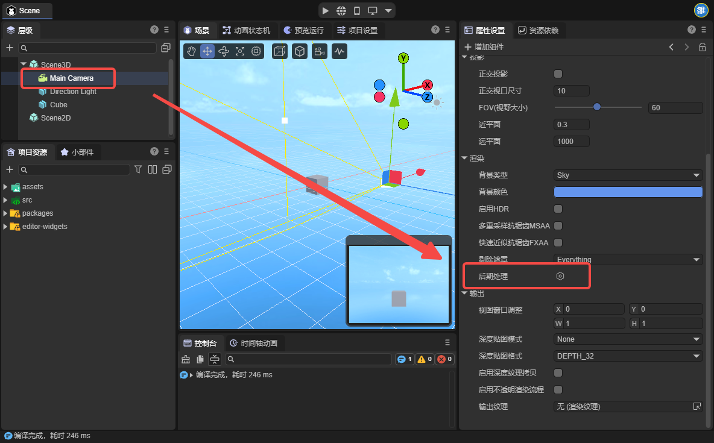
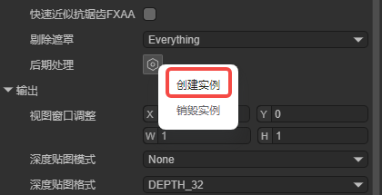
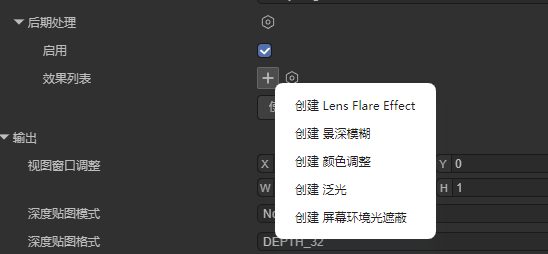
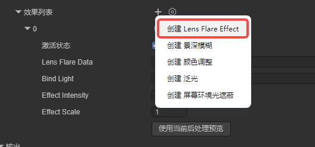
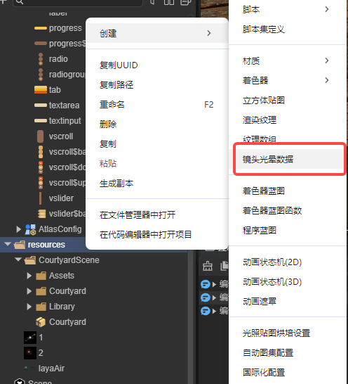
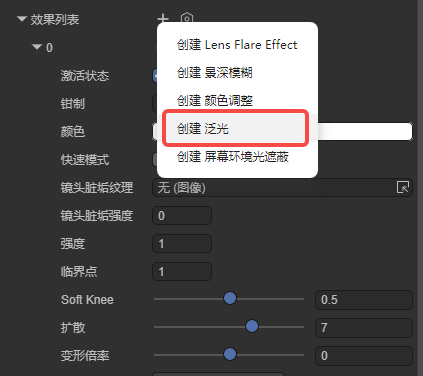
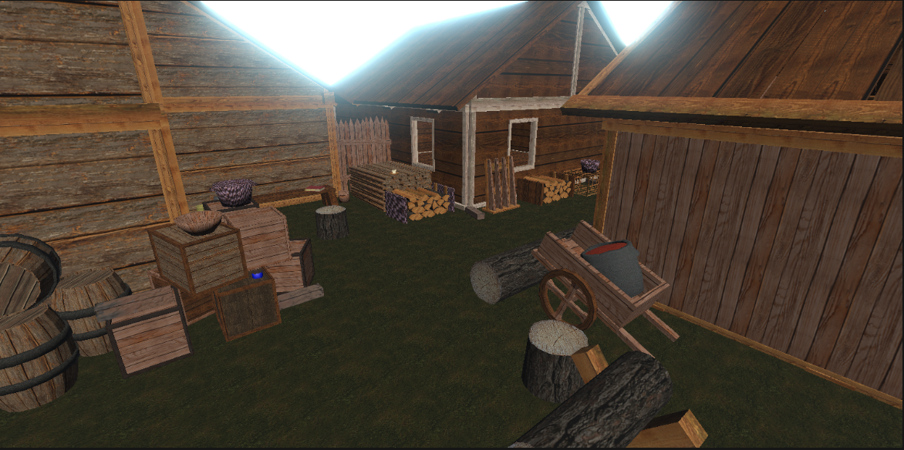
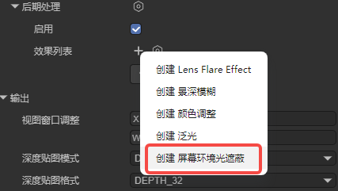
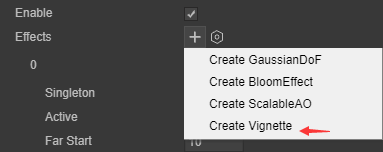

后处理
一、后处理概述
后处理（PostProcessing）是现代游戏中必不可少的技术之一。它通过对3D场景渲染完成的最终图像进行二次处理，实现不同的视觉效果或艺术风格。
下面这两张图片展示了引擎中景深模糊的效果，可以看到开启后处理效果后场景背景变模糊了。
未开启后处理时的效果
图1-1
开启后处理后的效果
图1-2
二、添加后处理效果
2.1在场景中添加
在层级面板中选中相机节点，此时在属性设置面板中就能看到后期处理这一属性：

图2-1
点击创建实例即可创建一个后处理实例：

图2-2
可以看到，有以下选项，我们一一讲解

图2-2
三、引擎内置后处理类型
3.1镜头光晕后处理（Lens Flare Effect）
镜头光晕是一种模拟物理摄像机光学特性的后处理效果。它通过捕捉画面中的强光区域，模拟光线在镜片组间反射产生的几何光斑、星芒及眩光。在 3D 开发中，该技术能有效增强光源的爆发力，消除渲染的“塑料感”，是提升场景电影质感与视觉冲击力的核心手段。
例如下图中明显的光斑就是镜头光晕

图3-1-1
在引擎当中，点击创建即可使用 如图3-1-2

图3-1-2
镜头光晕后处理参数说明如下
| 参数 | 类型 | 说明 | 默认值 |
|------|------|------|--------|
| active | boolean | 是否激活此元素（所有后处理效果均有此参数 后续不再说明） | true |
| lensFlareData | LensFlareData | 镜头光晕数据（包含所有元素） | null |
| bindLight | Light | 绑定的光源（必须设置） | null |
| effectIntensity | number | 效果整体强度 | 1.0 |
| effectScale | number | 效果整体缩放 | 1.0 |
首先是lensFlareData，我们可以使用代码创建，也可以直接在资源面板中新建，如图3-1-3

图3-1-3
镜头光晕属性如图3-1-4所示

| 参数 | 类型 | 说明 | 默认值 |
|---|---|---|---|
texture |
BaseTexture | 光晕元素的纹理贴图 | Texture2D.whiteTexture |
tint |
Color | 光晕元素的颜色 | Color(1,1,1,1) |
intensity |
number | 光晕元素的强度 | 1.0 |
startPosition |
number | 起始位置（0=光源中心，1=屏幕边缘） | 0.0 |
angularOffset |
number | 角度偏移（0-360度） | 0.0 |
rotation |
number | 旋转角度 | 0.0 |
autoRotate |
boolean | 是否自动旋转 | false |
scale |
Vector2 | 缩放（x, y） | Vector2(1, 1) |
positionOffset |
Vector2 | 位置偏移（屏幕空间，x, y） | Vector2(0, 0) |
图3-1-4
我们将贴图拖入装饰器，再将镜头光晕数据和灯光拖入，即可实现图3-1-5的效果。

图3-1-5
3.2景深模糊（GaussianDoF）
景深模糊是一种常见的模拟相机镜头焦距特性的后处理效果。在现实生活中，相机只能在一定距离内对物体进行锐利的聚焦; 离相机较近或较远的物体会有点失焦。点击创建即可使用,如图3-2-1

图3-2-1
景深模糊参数如下:
| 参数 | 类型 | 说明 | 默认值 | 取值范围 |
|------|------|------|--------|----------|
| Far Start | number | 开始远景模糊的深度（世界空间单位） | 10.0 | > 0 |
| Far End | number | 达到最大模糊半径的远景深度（世界空间单位） | 30.0 | >= farStart |
| Max Radius | number | 最大模糊半径 | 1.0 | 0.0 - 2.0 |
应用效果如图3-2-2所示,可以看到,远处的房屋变模糊了

图3-2-2
3.3颜色调整（ColorGradEffect）
后处理颜色调整 就像是给 3D 场景添加了一层实时运行的“电影滤镜”。在场景渲染完成后，通过调整画面的亮度、对比度、饱和度以及色调（Hue），统一全局的视觉风格。它能将渲染出的原始图像从平淡的“数码感”转化为具有特定氛围的艺术效果——例如通过增加蓝色调营造孤寂的科幻感，或通过提高对比度模拟烈日下的沙漠。该效果使用 LUT（Look-Up Table，查找表）技术实现高效的颜色调整。点击创建即可使用,如图3-3-1

图3-3-1
颜色调整参数说明总览
ToneMapping（色调映射）
| 参数 | 类型 | 说明 | 默认值 |
|---|---|---|---|
toneMapping |
ToneMappingType | 色调映射类型（None/ACES） | ToneMappingType.None |
Lift/Gamma/Gain（暗部/中间调/亮部）
| 参数 | 类型 | 说明 | 默认值 | 范围 |
|---|---|---|---|---|
Enable |
boolean | 是否启用 | false | true/false |
Lift |
Vector3 | 暗部调整 | Vector3(0,0,0) | -1 到 1 |
Gamma |
Vector3 | 中间调调整 | Vector3(1,1,1) | 999 到 0.5 |
Gain |
Vector3 | 亮部调整 | Vector3(1,1,1) | 0 到 2 |
Color Adjust（颜色调整）
| 参数 | 类型 | 说明 | 默认值 | 范围 |
|---|---|---|---|---|
Enable |
boolean | 是否启用颜色调整 | false | true/false |
PostExposure |
number | 曝光值 | 1.0 | - |
Contrast |
number | 对比度 | 1.0 | 0-2 |
Saturation |
number | 饱和度 | 1.0 | 0-2 |
HueShift |
number | 色相偏移 | 0.0 | -0.5 到 0.5 |
colorFilter |
Color | 颜色滤镜（正片叠底） | Color(1,1,1,1) | - |
White Balance（白平衡）
| 参数 | 类型 | 说明 | 默认值 | 范围 |
|---|---|---|---|---|
Enable |
boolean | 是否启用白平衡 | false | true/false |
Temperature |
number | 色温 | 0.0 | -100 到 100 |
Tint |
number | 色调 | 0.0 | -100 到 100 |
Shadows/Midtones/Highlights（阴影/中间调/高光）
| 参数 | 类型 | 说明 | 默认值 | 范围 |
|---|---|---|---|---|
Enable |
boolean | 是否启用 | false | true/false |
Shadows |
Vector3 | 阴影调整 | Vector3(1,1,1) | 0-5 |
Midtones |
Vector3 | 中间调调整 | Vector3(1,1,1) | 0-5 |
Highlights |
Vector3 | 高光调整 | Vector3(1,1,1) | 0-5 |
ShadowLimitStart |
number | 阴影起始点 | 0.0 | 0-1 |
ShadowLimitEnd |
number | 阴影结束点 | 0.33 | 0-1 |
HighLightLimitStart |
number | 高光起始点 | 0.55 | 0-1 |
HighLightLimitEnd |
number | 高光结束点 | 1.0 | 0-1 |
Split Toning（分离色调）
| 参数 | 类型 | 说明 | 默认值 | 范围 |
|---|---|---|---|---|
Enable |
boolean | 是否启用分离色调 | false | true/false |
Split Shadow |
Vector3 | 阴影色调 | Vector3(0.5,0.5,0.5) | 0-1 |
Splithighlights |
Vector3 | 高光色调 | Vector3(0.5,0.5,0.5) | 0-1 |
Split Balance |
number | 平衡值 | 0.0 | -1 到 1 |
3.4泛光（Bloom Effect）
Bloom 是一种模拟真实相机成像或人眼视觉的物理现象。当光线极强时，它会“溢出”物体的边缘，在周围产生一层柔和的光晕效果。它能让发光的物体（如灯管、魔法特效、太阳）看起来真的在“散发热量或能量”。点击创建即可使用,如图3-4-1

图3-4-1
以下为泛光后处理的参数说明
| 参数 | 类型 | 说明 | 默认值 | 范围 |
|---|---|---|---|---|
Clamp |
number | 钳制值，设置钳制像素的值以控制 Bloom 数量（伽马空间） | 65472 | - |
color |
Color | 泛光颜色，可以调整泛光的色调 | Color(1,1,1,1) | - |
FastMode |
boolean | 快速模式，降低质量以提升性能 | false | true/false |
DirtTexture |
BaseTexture | 污渍纹理（可选），用于增加镜头污渍效果 | null | - |
DirtIntensity |
number | 污渍强度，控制污渍效果的强度 | 0.0 | ≥ 0 |
Intensity |
number | 泛光过滤器强度，控制泛光效果的强度 | 1.0 | ≥ 0 |
Threshold |
number | 泛光阈值，低于此亮度值的像素会被过滤掉（伽马空间） | 1.0 | ≥ 0 |
SoftKnee |
number | 软过渡强度，在阈值以下进行渐变过渡 | 0.5 | 0.0 - 1.0 |
Diffusion |
number | 扩散值，改变泛光的扩散范围，会影响内部迭代次数 | 7.0 | 1.0 - 10.0 |
AnamorphicRatio |
number | 形变比，通过扭曲泛光产生视觉形变 | 0.0 | -1.0 - 1.0 |
通过调整泛光强度，我们可以得到以下效果，如图3-4-2所示，可以看到天空具有泛光效果，就像有巨大的灯光打到场景中

图3-4-2
3.5屏幕环境光遮蔽（ScalableAO）
环境光遮蔽效果用于计算场景中暴露在环境照明下的点。然后，它会使隐藏在环境光之外的区域变暗，例如折痕、孔洞和靠近的物体之间的空间。
您可以通过两种方式实现环境光遮蔽效果：作为全屏后期处理效果实时实现。实时环境光遮蔽效果可能会占用大量资源。它对处理时间的影响取决于屏幕分辨率和效果属性。
在IDE中点击创建即可使用，如图3-5-1

图3-5-1
可拓展环境光遮蔽参数类型：
| 参数类型 | 参数解释 |
|---|---|
| AO Color | 设置环境光遮挡的颜色 |
| Intensity | 环境光遮挡产生强度 |
| Radius | 设置采样点的半径，以控制环境光遮蔽区域的范围 |
| AO Quality | 环境光遮蔽效果质量（高-中-低三档） |
拉强效果后开关效果如动图3-5-2所示，可以看到模型的隐藏边缘产生明显阴影效果

动图3-5-2
四、自定义后处理类型
在3.0引擎中编写好自己的后处理效果后，在类定义前加上关键字@regClass()就可以将自定义好的后处理效果显式的展现在Camera的后处理组件的效果列表中
图4-1

图4-2